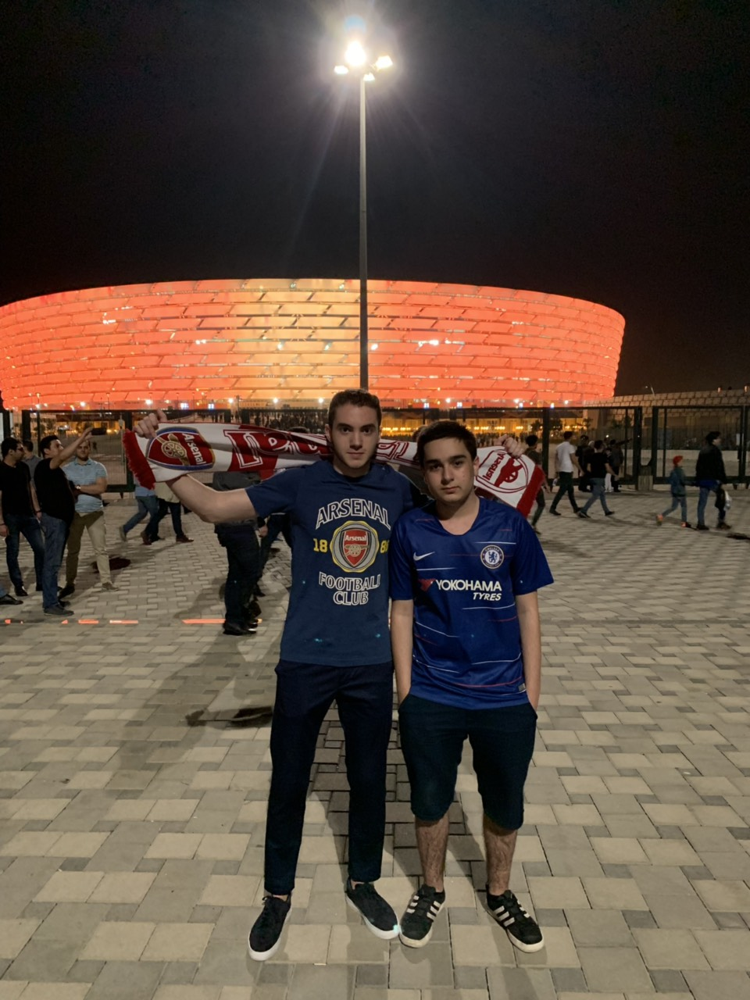

Fan
I have been an Arsenal fan since the day I can remember. I used to gather up with my family to watch football in the evenings. Being a fan of Arsenal was inherited from my father. This event of us watching football as a family is what gave me a love for the sport. One of my peak life moments was when I went to an Arsenal game in Baku in Azerbaijan with my friend. He was a fan of the opposing team, but the love for the sport united us.